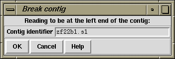

The Break Contig function (which is available from the gap4 Edit menu) enables contigs to be broken by removing the link between two adjacent readings. The user defines the name or number of the reading that, after the break, will be at the left end of the new contig. That is, the break is made between the named reading and the reading to its left.

It is also possible to interactive select places to break the contig when using the Contig Editor.
See section Break Contig.